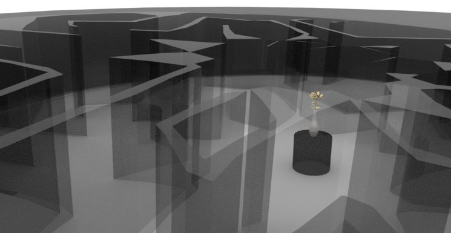
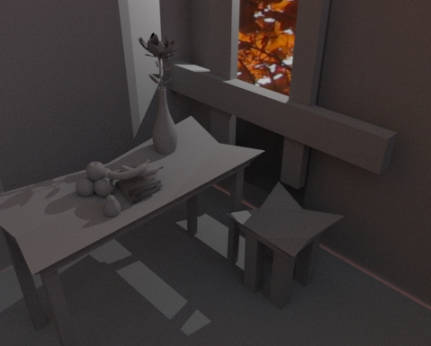
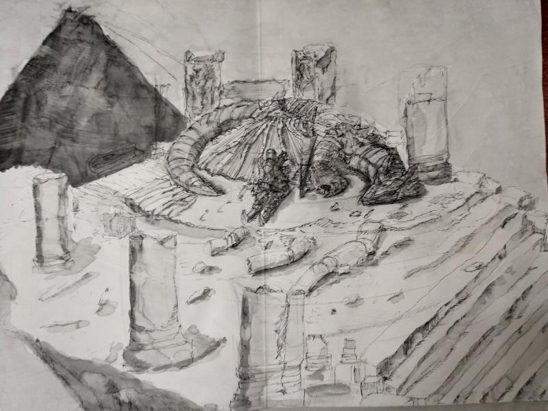

Title: The Hero's Journey
Medium: Photoshop
The logic that makes up for my use of my content is the deep archetypal myths and their motifs. The hero’s journey, bringing chaos into order. The ruined picture of Rome symbolizes the fall of order into chaos. The pyramid shows order, but it's about to be destroyed and brought down into chaos by the tyrant: depicted as a dragon. The hero is shown as the knight prepares to restore order by slaying the dragon.

Title: Glass Case
Medium: Maya
Glass Case is a virtual installation piece; the viewer enters a glass labyrinth to find their way to the golden flower. As one enters a museum, they see a object displayed within a glass case. The virtual installation was to emphasize transparency and reflection, the eye of the viewer as they look directly and reflectively at the piece, boxed in the glass. The lighting focus on flower to be seen from anywhere within the labyrinth. The texture of the labyrinth to glass to suggest the sense of caution and fragility. The flower having a gold texture gives it a element of appeal. The viewer enters into an increased interiority, cautionary motion comes with hesitation, a deepening of oneself in psychological space.
Video
https://vimeo.com/298196095
Title: Still life
Medium: Maya
Still Life is an animation was inspired from still life paintings. I looked As I looked back at still life paintings then back to the animation, I get the feeling of repetition from the constant movement of the objects. Each object enters the scene from different spaces, adding into the scene, giving a brushstroke narrative gesture. The animation felt both natural and artificial. The artificial set up of the gestural objects onto the scene and then a natural still.

Title: Exhumation
Medium: Pen, ink, pencil, and paper
The personal art piece is a knight resting after slaying a dragon. It was a process of going backwards into myths that was interesting. From there I was trying to distill the myth into an image my own way. A similar approach to renaissance or classical paintings.